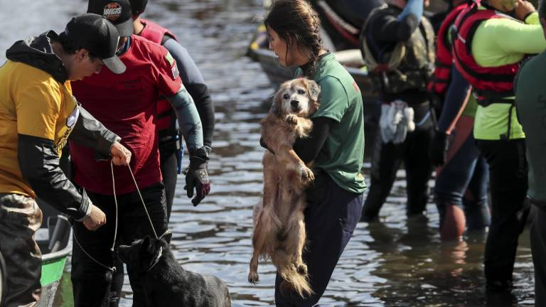
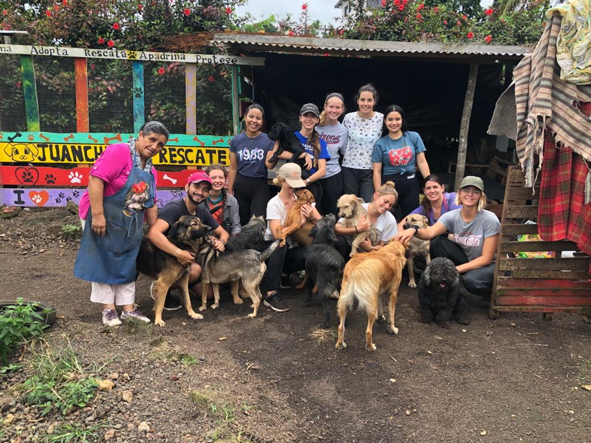

Nuestra Historia y Misión
Desde nuestros inicios en 2010, hemos trabajado incansablemente para mejorar la vida de los animales.
¿Quiénes Somos?
Rescate Animal es una organización sin fines de lucro dedicada a la protección y el bienestar animal. Creemos en un mundo donde cada animal merece una vida digna, libre de maltrato y abandono. Nuestro equipo está compuesto por veterinarios, voluntarios apasionados y defensores de los derechos de los animales.
Realizamos rescates de emergencia, brindamos atención médica, programas de rehabilitación y campañas de concientización para promover la adopción responsable y la esterilización.


Nuestros Valores
- Compasión: Actuamos con empatía hacia todos los seres vivos.
- Integridad: Operamos con transparencia y responsabilidad.
- Educación: Fomentamos la tenencia responsable y el respeto animal.
- Colaboración: Trabajamos junto a la comunidad para un impacto mayor.